医療UX設計
患者情報管理システム
プライマリケア診療所向けの患者情報管理システム — 医師のPCダッシュボードと看護師のモバイルをリアルタイム同期し、「伝達ミスゼロ・重要アラートの見落としゼロ」で患者安全を守るUX設計。
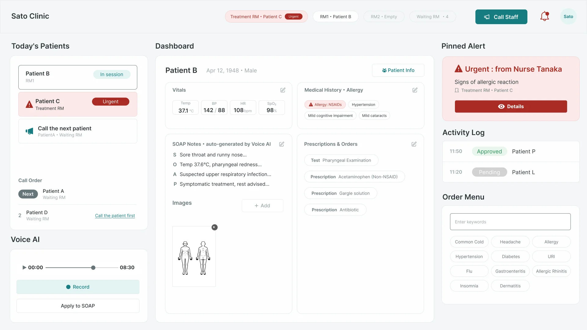
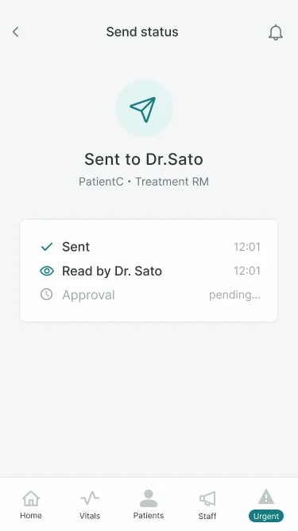
看護師の報告と医師の集中を、
音を立てずにつなぐ。
診療所に潜む「データの分断・伝達ラグ・入力疲弊」を、医師向け3ペイン固定ダッシュボード×看護師向けモバイル即時同期で解消するデザイン提案。鍵となる体験コンセプトは「静かな同期」。ペーパーワイヤー5案からユーザビリティテスト2ラウンドを経て、Hi-Fiモックまで検証を重ねた。
担当：リサーチ〜ワイヤー〜ユーザビリティテスト〜Hi-Fiモック ／ Google UX Design Certificate課題（架空クライアント）
緊急の瞬間を、4つのステージで設計する。
ジャーニーマップで「異常値の発見 → 医師の承認」までを分解し、各ステージの感情に対応するシステムの役割を1対1でマッピングした。
数タップのバイタル入力
モバイルの入力を安全必須項目のみに絞り、ベッドサイドで数タップで完了できるようにした。
固定ゾーンへのピン留め
緊急アラートは医師画面の固定ゾーンに表示。スクロールで流れず、視線移動だけで気づける。
送って忘れられる同期
送信・既読・承認のステータスが自動で返り、口頭確認もフォローアップも不要になる。
ワンクリックの最短ループ
アラートから治療指示までを最短化。確認漏れはハードストップで構造的に防ぐ。
同じダッシュボードが、状態によってどう変わるか。緊急アラートは固定ゾーンに現れ、スクロール位置に関係なく視界に入る。
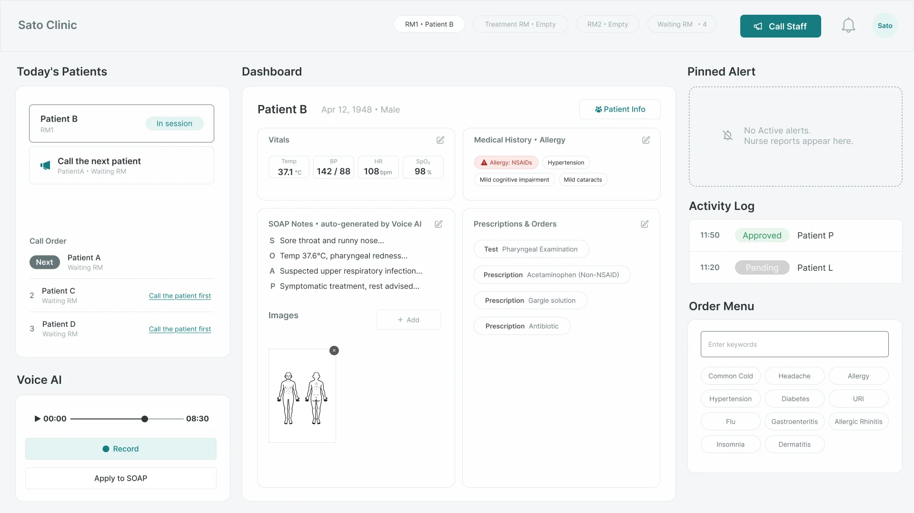
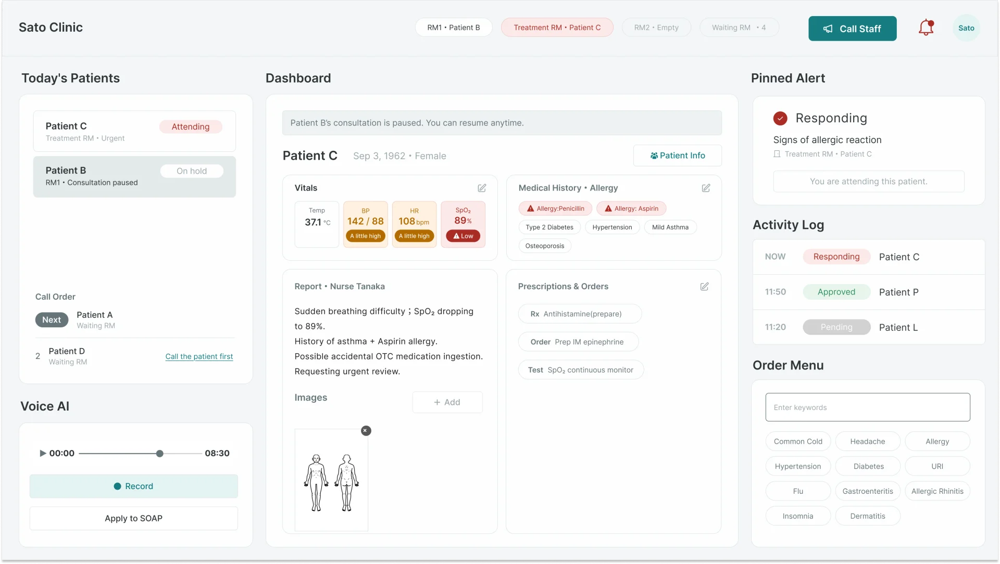
紙のワイヤー5案から、テスト2ラウンドで磨く。
看護師向けバイタル入力画面はペーパーワイヤーフレームで5レイアウトを比較検討。Lo-Fiプロトタイプを2ラウンドのユーザビリティテストにかけ、発見を1つずつデザインに反映した。
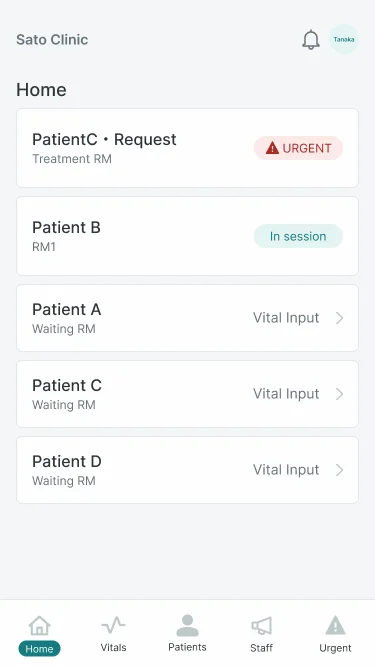
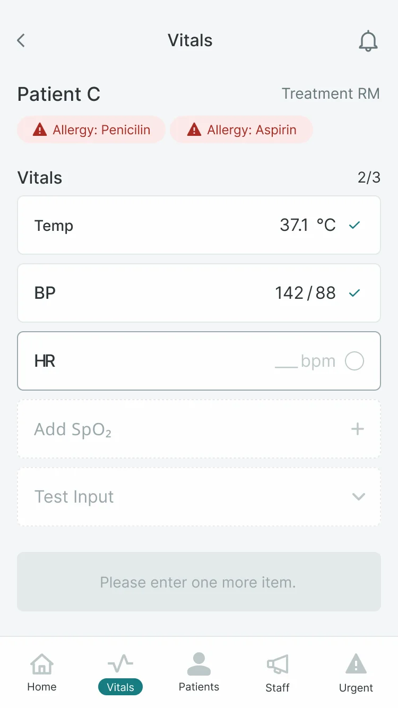
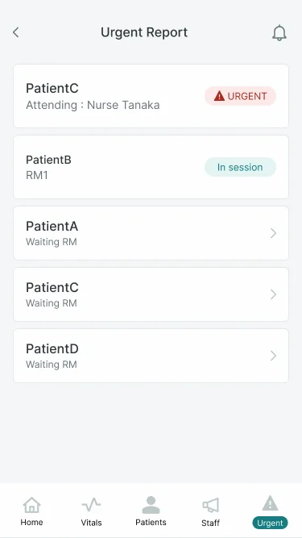
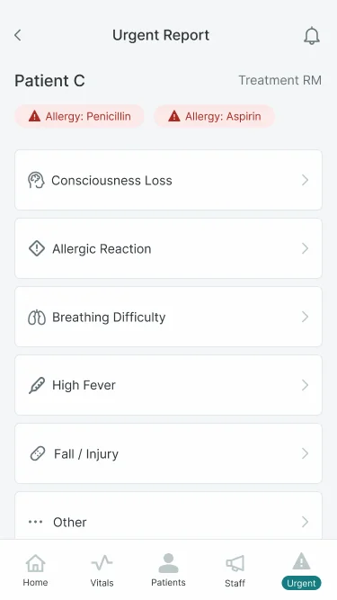
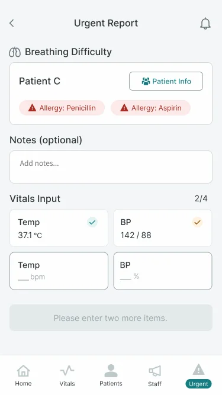
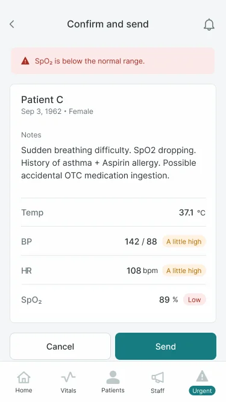
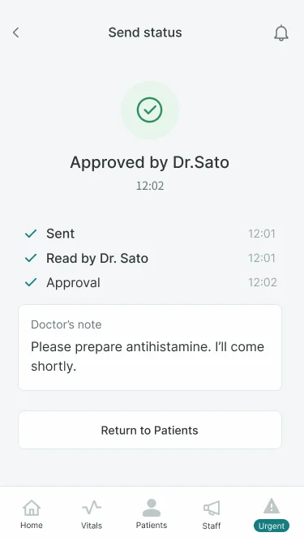
「気づけない・見分けられない」
緊急バナーの見落とし、異常値が視覚的に区別できない、画面ごとに変わる送信ラベルへの迷い —— の3点を検出。アラートの色分け重大度表示と、入力時点からの異常値ハイライトで解消。
「輪郭だけでは足りない」
枠線のみの強調では不十分（色の併用が必要）、'送信'ラベル統一で迷いが解消、ヘッダー表記の微細な不整合 —— を確認。1アクション=1ラベルの原則をデザインシステムに昇格。
ケーススタディ全文（PDF）。
上記はWeb向けに要点をまとめたサマリーです。リサーチからHi-Fiモックアップまでの全工程は、下記のスライドデッキからそのままご覧いただけます。
PDFが表示されない場合は「別タブで開く」からご覧ください。